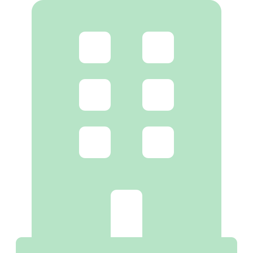

Skyline Greens delivers ultra-fresh produce grown in architecturally precise vertical environments — supplying restaurants, hotels, and retailers with zero-compromise quality.

Who We Are
We build vertical growing systems that treat agriculture as an engineering discipline — not guesswork. Every variable controlled. Every harvest consistent.
Our farms occupy existing urban infrastructure: rooftops, warehouses, interiors. We bring food production inside the city and remove the logistics chain that degrades quality.
What We Grow
Every cultivar selected for flavour density, shelf integrity, and visual presentation standards.
Baby spinach, arugula, romaine, butter lettuce — harvested at peak flavour, never pre-cut.
Basil, mint, coriander, dill, chives — supplied as living root systems for extended kitchen life.

Sunflower, pea shoots, radish, amaranth — 40× the nutrient density of mature leaves. Cut to order.

Edible flowers, watercress, mizuna, tatsoi — for chefs who demand ingredients with a point of view.
Custom-designed mix packs curated by our agronomists. Consistent ratios, consistent presentation.
Work with our team to specify varieties, growth cycles, and harvest schedules around your menu.
How We Grow
Our proprietary growing system integrates climate engineering, LED spectrum tuning, and closed-loop hydroponics — removing agriculture's dependency on nature entirely.
Water is recirculated and pH-calibrated continuously. Zero runoff, zero waste.
Each cultivar receives a bespoke light recipe — wavelength, intensity, and photoperiod dialled for flavour.
Temperature, humidity, and CO₂ held to ±0.5° tolerance. Seasons become a design variable.
Over 200 data points captured per cycle, driving continuous yield and quality optimisation.
Work With Us
Whether you operate a restaurant, hotel kitchen, or retail chain — Skyline Greens offers supply agreements calibrated to your volume, variety, and delivery cadence.